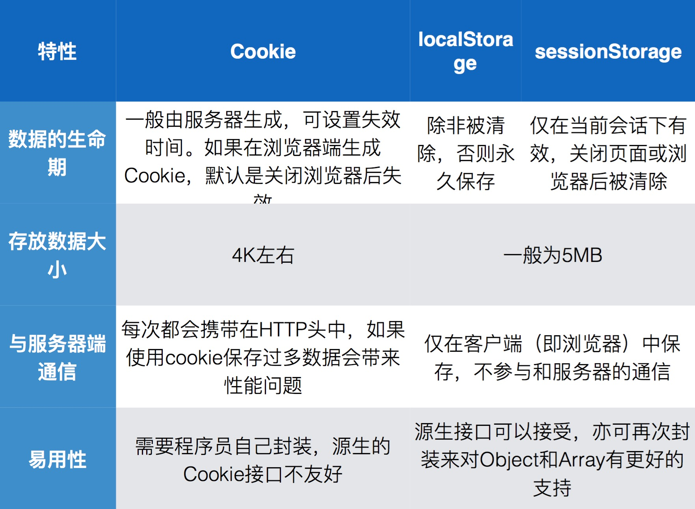
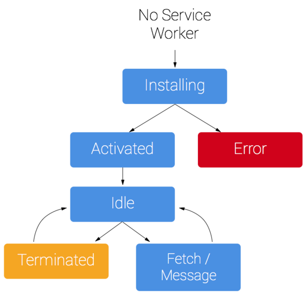

HTML5 提供了强大的本地化功能，使 web 应用在离线或者网络情况较差的环境下依然能正常访问，HTML5 的本地化功能主要分为 OFFLINE (离线) 和 STORAGE （存储）。
STORAGE（存储） Cookie 在HTML5以前我们会使用 cookie，在浏览器端缓存一些数据，例如：登录用户信息，历史搜索信息等等。但是cookie所支持的容量仅仅只有 4k ，也没有专门的api来操作，只能依赖一些开源的库， 这里使用 cookies.js 存储和获取cookie信息
1 2 3 4 5 6 7 8 9 10 11 12 13 14 15 16 17 Cookies.set('key' , 'value' ); Cookies.set('key' , 'value' ).set('hello' , 'world' ); Cookies.set('key' , 'value' , { domain: 'www.example.com' , secure: true }); Cookies.set('key' , 'value' , { expires: 600 }); Cookies.set('key' , 'value' , { expires: '01/01/2012' }); Cookies.set('key' , 'value' , { expires: new Date (2012 , 0 , 1 ) }); Cookies.set('key' , 'value' , { expires: Infinity }); Cookies.get('key' );
由此可见用cookie存储有一下几个缺点:
存储数据的量比较小
本身没有方便的api对其进行操作
cookie信息会在http请求时加入到请求头中，既不安全也增加了带宽。
WEB Storage HTML5 提拱更好的本地存储规范 localStorage 和 sessionStorage , 它们将数据存储在本地，而且在http请求时不会携带 Storage 里的信息, 使用方式也很简单:
1 2 3 4 5 6 7 localStorage.setItem('key' , 'value' ); localStorage.getItem('key' ); localStorage.removeItem('key' ); sessionStorage.setItem('key' , 'value' ); sessionStorage.getItem('key' ); sessionStorage.removeItem('key' );
sessionStorage 和 localStorage 使用方式及特性基本一致，唯一的区别是， sessionStorage 只在会话内有效，当浏览器窗口关闭，sessionStorage 缓存的数据会自动被清除， 而 localStorage 只要不手动清除，它会永久保存在本地。
这里有张图片分析了 cookie 、 localStorage 、 sessionStorage 三者的区别

OFFLINE（离线） 为了让 webapp 拥有像 native app 一样的功能和体验， 在 HTML5的规范中加入了许多新的api， 让页面可以在离线环境下正常访问。 service worker 和 indexedDB 两者配合可以就可以开发离线使用的 webapp 了，由于 service worker 目前的兼容性不太好，这里我们写介绍下比较早的方案 application cache 。
service worker Service Worker是基于Web Worker的事件驱动的，他们执行的机制都是新开一个线程去处理一些额外的，以前不能直接处理的任务。对于Web Worker，我们可以使用它来进行复杂的计算，因为它并不阻塞浏览器主线程的渲染。而Service Worker，我们可以用它来进行本地缓存，相当于一个本地的proxy。说起缓存，我们会想起我们常用的一些缓存技术来缓存我们的静态资源，但是老的方式是不支持调试的，灵活性不高。使用Service Worker来进行缓存，我们可以用javascript代码来拦截浏览器的http请求，并设置缓存的文件，直接返回，不经过web服务器，然后，做更多你想做的事情。
因此，我们可以开发基于浏览器的离线应用。这使得我们的web应用减少对网络的依赖。例如，我们开发了一个新闻阅读的web应用，当你用手机浏览器在有网络的情况下打开时，你可以正常的获取新闻内容。可是，如果手机进入飞行模式，那这个应用你就没法使用了。
如果我们使用了Service Worker做缓存，浏览器http请求会先经过Service Worker，通过url mapping去匹配，如果匹配到了，则使用缓存数据，如果匹配失败，则继续执行你指定的动作。一般情况下，匹配失败则让页面显示“网页无法打开”。
service work 生命周期 
service work demo 1 2 3 4 5 6 7 8 9 10 11 12 13 <!DOCTYPE html> <html lang ="en" > <head > <meta charset ="utf-8" > <script > navigator.serviceWorker.register("/service-worker.js" ).then(function (serviceWorker ) console .log("success!" ); }); </script > </head > <body > </body > </html >
在页面注册service-worker成功时就会调用这个js
1 2 3 4 5 6 7 8 9 10 11 12 13 14 15 16 17 18 19 20 21 22 23 24 25 26 27 28 29 30 31 32 33 34 35 36 37 this .oninstall = function (e ) var resources = new Cache(); var visited = new Cache(); e.waitUntil(resources.add( "/index.html" , "/fallback.html" , "/css/base.css" , "/js/app.js" , "/img/logo.png" ).then(function ( return Promise .all([ caches.set("v1" , resources), caches.set("visited" , visited) ]); })); }; this .onfetch = function (e ) e.respondWith( caches.match(e.request).catch(function ( return caches.get("visited" ).then(function (visited ) return fetch(e.request).then(function (response ) visited.put(e.request, response); return response; }); }); }).catch(function ( return caches.match("/fallback.html" ); }); ); };
service worker 采用事件监听机制， 上面的代码监听了 install 和 fetch 事件，当 server worker 安装成功后，调用此方法，然后缓存页面的资源文件， fetch 页面请求事件， server worker 拦截到用户请求，当发现请求文件命中缓存则从缓存中取得文件，返回给页面，无需经过服务器，借此达到离线的目的。
当然 service worker 的功能远不止现在这些， 更多api，请看这里
indexedDB indexedDB 是一个用于本地存储数据的 nosql 数据库，拥有极快的数据查询速度，而且可以直接保存js 对象。相比web sql(sqlite)更加高效，包括索引、事务处理和健壮的查询功能。indexedDB特点：
1.一个网站可能有一个或多个 IndexedDB 数据库，每个数据库必须具有惟一的名称。
一个对象存储（由一个名称惟一标识）是一个记录集合。每个记录有一个键 和一个值。该值是一个对象，可拥有一个或多个属性。键可能基于某个键生成器，从一个键路径衍生出来，或者是显式设置。一个键生成器自动生成惟一的连续正整数。键路径定义了键值的路径。它可以是单个 JavaScript 标识符或多个由句点分隔的标识符。
基本使用方式如下：
1 2 3 4 5 6 7 8 9 10 11 12 13 14 15 16 17 18 19 20 21 22 23 24 25 26 27 28 29 30 31 32 33 34 35 36 37 38 39 40 41 42 43 44 45 46 47 var openRequest = indexedDB.open("auto_people" , 3 );var db; openRequest.onupgradeneeded = function (e ) console .log("Running onupgradeeded..." ); var thisDB = e.target.result; if (!thisDB.objectStoreNames.contains("people" )){ thisDB.createObjectStore("people" , {autoIncrement:true }); } } openRequest.onsuccess = function (e ) console .log("success!" ); db = e.target.result; } openRequest.onerror = function (e ) console .log("error!" ); console .dir(e); } var transaction = db.transaction(['people' ], "readwrite" ); var store = transaction.objectStore("people" ); var request = store.add({ name: 'myron' , email: 'test@qq.com' , created: new Date () }); request.onerror = function (e ) alert('error!' ); console .dir(e); } request.onsuccess = function (e ) console .log('Did it!' ); } request = store.get(1 ); request.onsuccess = function (e ) var result = e.target.result; console .dir(result); if (result){ } }
application cache application cache 缓存应用文件的一种方案, 它可以本整个网页需要的资源文件（包括html）缓存在本地，当没有网络或者网络情况较差的时候，则使用本地的缓存文件来运行，使用方式也较为便利。
1. 配置manifest文件 1 2 3 4 5 6 7 8 9 10 11 CACHE MANIFEST//必须以这个开头 version 1.0 //最好定义版本，更新的时候只需修改版本号 CACHE: //定义需要魂村的文件 m.png test.js test.css NETWORK: //此部分下列出的文件是需要连接到服务器的白名单资源。无论用户是否处于离线状态，对这些资源的所有请求都会绕过缓存。可使用通配符。 * FALLBACK 404.html, 500.html //，用于指定无法访问资源时的后备网页。其中第一个 URI 代表资源，第二个代表后备网页。两个 URI 必须相关，并且必须与清单文件同源。可使用通配符。
2.在html中设置缓存 1 2 3 4 5 6 7 8 9 <html manifest ="test.manifest" > <head > <title > AppCache Test</title > <link rel ="stylesheet" href ="test.css" > <script src ="test.js" > </script > </head > <body > </body > </html >
3.在服务器上设置 manifest 的 MIME-TYPE 1 2 3 4 <mime-mapping > <extension > manifest</extension > <mime-type > text/cache-manifest</mime-type > </mime-mapping >
application cache 虽然没有 service work 功能那么强大，但是在浏览器不支持 service work的情况下使用 application cache 也是个不错的方案。